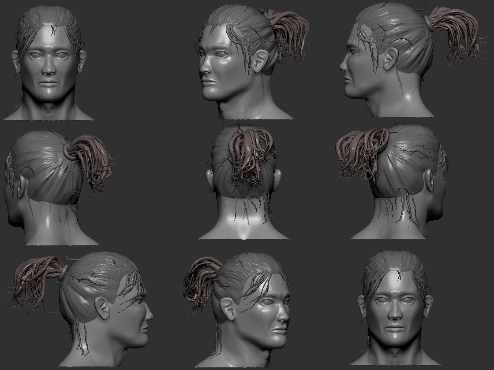

Sandwich Kwon Do (BYU short film)
Production-ready character rigs and nine prop rigs, plus a custom vehicle rig built with mGear that has working steering, suspension, automatic wheel rotation, and tire deformation.
I’m Collin, a character TD who builds production-ready rigs and the Python tools that make rigging faster. Drag the yellow control to try the arm rig on the right.
Watch the demo reelGet in touchCurrent production work on BYU films and games. Rig demos are below, with more clips in the gallery.
Production-ready character rigs and nine prop rigs, plus a custom vehicle rig built with mGear that has working steering, suspension, automatic wheel rotation, and tire deformation.
Game-ready rigging solutions focused on animator usability and performance, including skinning, deformation, and character setup workflows, built alongside artists and programmers.
Prop rigs for a short film, made as part of a production team one class ahead of my cohort.
I build the systems that rigs are made from. Code is on GitHub.
A guide-based Python system for Maya that lets riggers generate and customize character rigs.
A reusable vehicle setup with steering, suspension, automatic wheel rotation, and tire deformation.
Working with animators, artists, and technical leads to solve production problems as they come up.
Special Problems final project: stretchy IK and rig tooling in Maya.
More rigs, sculpts and shots from classes and productions.



I’m a Computer Science student at BYU (Animation & Games emphasis, graduating April 2027) working as a character TD on student films and games. Before that I produced 12+ short 3D animations for BYU Information Systems and designed a mascot game for students to play during football games. I’m looking to contribute to character rigging and technical art pipelines for animated projects.
Open to character rigging and technical art roles.
collinverbanatz@gmail.com